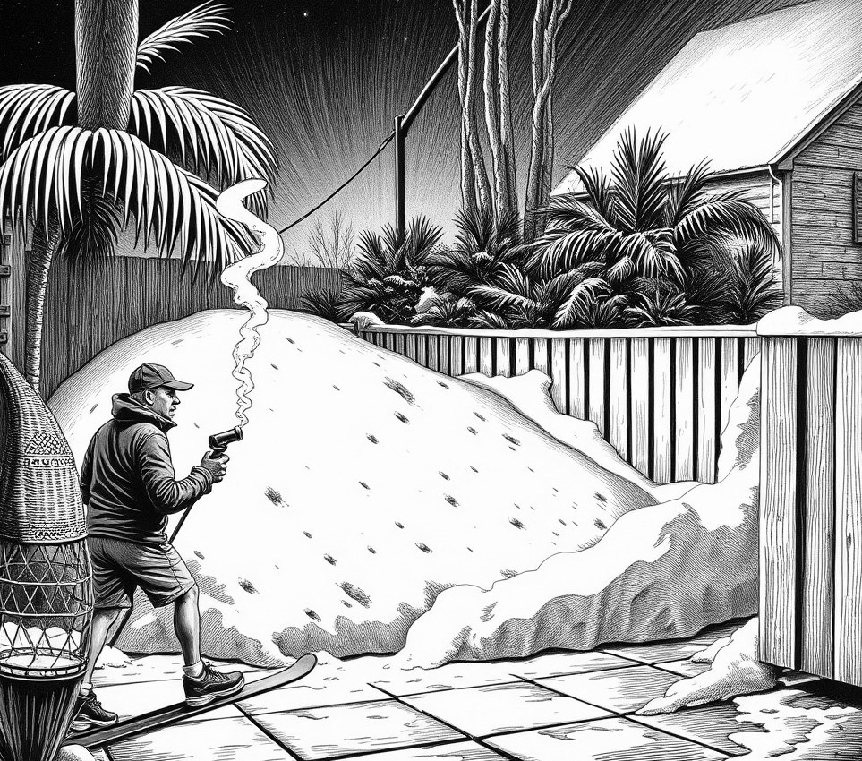

New Wollongong . 22 December 2914

I am writing to register a formal council complaint against my neighbour, Haruki Sato at No. 14, whose newly installed AtmosScape 'Alpine Blizzard' garden package is completely ruining my yard. While I respect a ratepayer's right to localise their property climate, Mr Sato’s atmospheric containment field is utterly defective, resulting in two-metre snowdrifts spilling continuously over our shared boundary fence into my micro-zone.
My property is currently licensed for mild Mediterranean conditions, ideal for my heirloom figs and potted bougainvillea. Instead, I am forced to clear powder snow off my terracotta tiles every morning using a hand-held melt-rig. Last Thursday, a localized squall originating from Sato’s outdoor pergola flash-froze my hydro-hammock mid-swing, rendering it entirely rigid. The temperature differential along our property line is now so extreme that local sparrows are collapsing from thermal shock when flying from my lemon tree into his blizzard.
When I attempted to address this amicably, Mr Sato emerged in full alpine mountaineering gear and claimed that the snow on my side was simply residual fallout caused by my own thermal updrafts drawing his frost across the divide. He refused to adjust his barometric pressure, arguing that his synthetic avalanche cycle is scheduled to run through July to maintain proper chalet ambiance for his fondue suppers.
This situation is unconscionable. My solar pavers are entombed in ice, and a family of wild emperor penguins has taken up residence inside my garden shed. If the Council does not order No. 14 to recalibrate his atmospheric boundary shields immediately, I will have no choice but to dial my own climate controller up to 'Sahara Sirocco' and let the resulting flash-thaw wash his entire ski deck down the street.